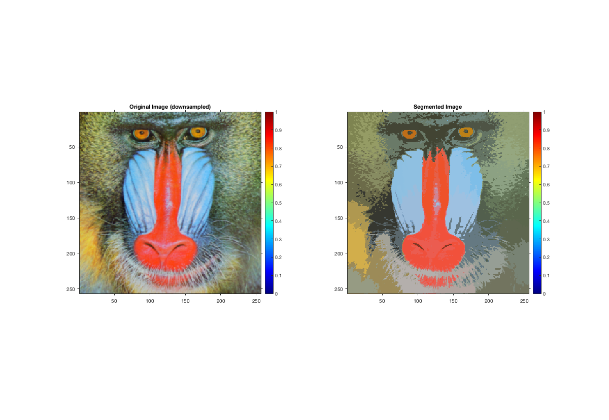

Contents
MyMainScript
clc;
tic;
Preprocessing
I_in = double(imread('../data/baboonColor.png'));
I_gaussfilt = imgaussfilt(I_in(:, :, :), 1);
I_downsample = I_gaussfilt(1:2:end, 1:2:end, :);
Hyperparameters
h_colour = 30;
h_space = 30;
num_nbr = 1000;
num_iter = 10;
fprintf('Tuned Gaussian kernel bandwidth for the color feature\n');
h_colour
fprintf('Tuned Gaussian kernel bandwidth for the spatial feature\n');
h_space
fprintf('Tuned number of iterations\n');
num_iter
Tuned Gaussian kernel bandwidth for the color feature
h_colour =
30
Tuned Gaussian kernel bandwidth for the spatial feature
h_space =
30
Tuned number of iterations
num_iter =
10
Segmentation
I_out = myMeanShiftSegmentation(I_downsample, h_colour, h_space, num_nbr, num_iter);
Displaying
figure("position",[100, 100, 1200, 2000]);
subplot(1,2,1),imshow(mat2gray(I_downsample));
title('Original Image (downsampled)');
axis on;
colormap(jet(256));
colorbar;
subplot(1,2,2),imshow(I_out);
title('Segmented Image');
colormap(jet(256));
axis on;
colorbar;
toc;
Elapsed time is 100.176635 seconds.
